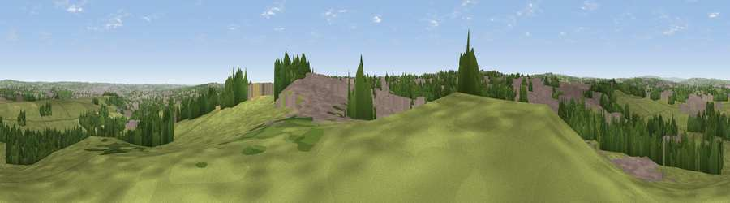

Viewpoint near Gildersome
#22688 in England · top 34% of its area beats it · near GildersomeThe view, rendered

A 360° render of this exact spot computed from the terrain model, tree cover and land cover — summer colours, afternoon light, calibrated against photographs of famous viewpoints. Real trees, hedges and buildings will differ in detail.
The panorama
Grey silhouette: terrain skyline in each direction (720 bearings, Earth curvature and refraction included). Dashed green: skyline with trees (+15 m) and buildings (+8 m) as obstacles. Blue strip: how far the ground is visible on each bearing.
Where the view opens
Wedge length = distance to the farthest visible ground on that bearing (vegetation-aware). Rings at 10, 25 and 50 km.
What fills the view
48% grassland · 29% built-up · 21% woodland · 3% cropland
Angular shares of the visible panorama (visual magnitude), not map area. Landscape diversity 0.49 (0–1 Shannon).
Key numbers
More beautiful places nearby
The staircase of upgrades: each row has a higher view potential than everything closer. Driving times are estimates from straight-line distance, calibrated against real road routing — check an actual route before setting out.
| Place | Direction | Drive | Score |
|---|---|---|---|
| Viewpoint near Woodkirk | SSE · 4 km | ~9 min | 62.1 |
| Rawdon Trig point | NNW · 11 km | ~20 min | 69.6 |
| Rawdon Billing | NNW · 11 km | ~21 min | 73.0 |
| Viewpoint near Otley | NNW · 15 km | ~27 min | 77.5 |
| Viewpoint near East Witton | N · 56 km | ~78 min | 77.8 |
| Darwen Hill | W · 57 km | ~79 min | 80.7 |
| Viewpoint near Thirlby | NNE · 60 km | ~82 min | 81.5 |
| White Brow | WSW · 61 km | ~83 min | 82.9 |
53.76105, -1.62568 · source: screening · position refined by local search. Computed location — check access rights before visiting.